第一部分 408 1000题ds题目册
第1章 绪论 共 26 题 · 教材第 2 页起
第 1 题
以下关于数据结构的说法中，正确的是（ ）。
A． 数据的逻辑结构独立于其存储结构 B． 数据的存储结构独立于其逻辑结构 C． 数据的逻辑结构唯一决定其存储结构 D． 数据结构仅由其逻辑结构和存储结构决定 答案与解析 答案：A
数据的逻辑结构是从面向实际问题的角度出发的，只采用抽象表达方式，独立于存储结构，数据的存储方式有多种不同的选择：而数据的存储结构是逻辑结构在计算机上的映射，它不能独立于逻辑结构而存在。数据结构包括三个要素，缺一不可。
教材第 2 页 第 2 题
设有如下遗产继承规则：丈夫和妻子可以互相继承遗产，子女可以继承父亲和母亲的遗产，子女间不能相互继承，则表示该遗产继承关系最合适的数据结构应该是（）
A． 树 B． 图 C． 线性表 D． 集合 答案与解析 答案：B
用排除法。由于元素间有次序关系，故排除选项D 集合，而元素可能存在多个前驱或后继结点，故排除选项C。该数据结构虽是层次关系，但可能不存在树根，故选项A 的树型结构不合要求。本题的答案是选项B，图形结构。
教材第 2 页 第 3 题
下列关于数据结构的说法，正确的有（ ） I．数据项是数据的基本单位II．抽象数据结构可以定义一个完整的数据结构III．循环队列属于数据结构中的物理结构IV．线索二叉树属于数据结构中的物理结构
A． II、III、IV B． I、II、IV C． I、III D． 全部正确 答案与解析 答案：A
I 错误，数据元素是数据结构的基本单位，数据项是构成数据结构的最小单位，不可再分。比如int 类型数据元素，一个数据元素是一个数据项；而结构体包含若干数据项，此时结构体是数据元素，多个成员是数据项。 II 正确，抽象数据结构（ADT）描述了数据的逻辑结构和抽象运算，通常用（数据对象，数据关系，基本操作集）这样的三元组来表示，从而构成一个完整的数据结构定义。 III、IV 正确，循环队列和线索二叉树都属于物理结构。注意：数据项是数据结构中讨论的最小单位，但是有的数据项是结构体是可以再分的，这种称为组合项。(这里不用过分纠结)
教材第 2 页 第 4 题
下列关于数据、数据元素、数据项的说法正确的是（ ）
A． 数据具有同一特点 B． 数据元素对应数据项的类型要一致 C． 每个数据元素都一样 D． 数据元素所包含的数据项的个数可以不相等 答案与解析 答案：B
同一逻辑结构中，数据元素的数据项个数和每个数据项的类型都要一致。
教材第 2 页 第 5 题
某算法的时间复杂度为𝑂𝑛2 ，表明该算法的（ ）。
A． 问题规模是𝑛2 B． 执行时间等于𝑛2 C． 执行时间与𝑛2 成正比 D． 问题规模与𝑛2 成正比 答案与解析 答案：C
问题规模是n。 𝑇𝑛= 𝑂𝑛2 表示𝑇𝑛≤𝑐⋅𝑛2 ，对所有足够大的n成立。即执行时间的上界是𝑛2 ，系数和低阶部分可以忽略。补充： • ：上界，即𝑇𝑛≤𝑐𝑓𝑛，最多这么慢𝑂𝑓𝑛 • ：下界，即𝑇𝑛≥𝑐𝑓𝑛，至少这么慢𝛺𝑓𝑛 ：确界，即𝑐1𝑓𝑛≤𝑇𝑛≤𝑐2𝑓𝑛，上下界都为f(n) • 𝛩𝑓𝑛
教材第 2 页 第 6 题
下列逻辑结构属于线性结构的是（ ）
A． 树 B． 图 C． 集合 D． 队列 答案与解析 答案：D
逻辑结构分为以下几类：
教材第 2 页 第 7 题
下列不属于物理结构的是（ ）
A． 顺序表 B． 单链表 C． 散列表 D． 有序表 答案与解析 答案：D
四大基本物理结构有：顺序存储结构、链式存储结构、索引存储结构、散列存储结构。有序表是逻辑结构中的线性结构。
教材第 2 页 第 8 题
数据结构和数据类型的形式定义分别为： Data-Structure=(D，R) Data-Type=(D，R，P) 试选择D、R、P 的确切含义是（ ）
A． 数据，数据元素，存储结构 B． 数据元素，数据关系，基本操作 C． 数据对象，存储结构，基本操作 D． 数据对象，数据关系，基本操作 答案与解析 答案：D
数据类型的定义：一个值的集合和定义在这个值集上的一组操作的总称。各字母含义：D 是数据对象，表示相同性质的数据元素的集合；R 是数据之间存在的关系；P 是数据基本操作。抽象数据类型(Abstract Data Type，ADT)一般指由用户定义的、表示应用问题的数学模型，以及定义在这个模型上的一组操作的总称，具体包括3 个部分：数据对象、数据对象上关系的集合以及对数据对象的基本操作的集合。 ADT 是概念上描述问题，DT 是在软件实现上描述问题。
教材第 3 页 第 9 题
下列代码的时间复杂度是（ ）
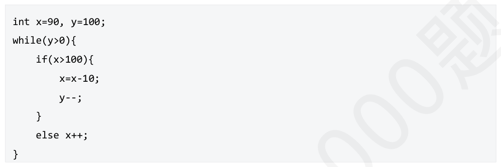
A． 𝑂𝑛 B． 𝑂𝑛2 C． 𝑂𝑛3 D． 𝑂1 答案与解析 答案：D
因为x，y 是固定的常数，所以时间复杂度是常数级别的。
教材第 3 页 第 10 题
下列代码的时间复杂度是（ ）
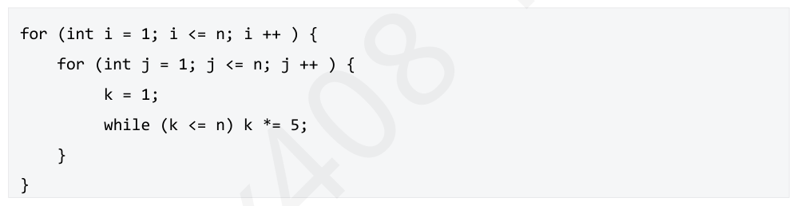
A． 𝑂𝑛2 B． 𝑂𝑛3 C． 𝑂𝑛2 𝑙𝑜𝑔2 𝑛 D． 𝑂𝑛𝑙𝑜𝑔2𝑛 答案与解析 答案：C
外面两个for 循环，执行循环次数分别是n, n；每次循环执行一次while 循环，一次while循环的时间开销𝑇𝑛= 𝑙𝑜𝑔5𝑛= 𝑂𝑙𝑜𝑔2𝑛，所以整个时间复杂度𝑇𝑛= 𝑛∗𝑛∗𝑙𝑜𝑔𝑛= 𝑂𝑛2 𝑙𝑜𝑔2𝑛。
教材第 3 页 第 11 题
下列代码的时间复杂度是（ ）
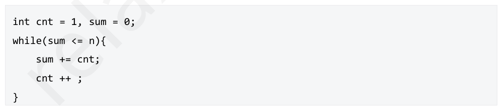
A． 𝑂𝑛 B． 𝑂𝑛2 C． 𝑂 D． 𝑂1𝑛 答案与解析 答案：C
对于sum第一次：sum = 0 + 1 = 1第二次：sum = 1 + 2 = 3第三次：sum = 3 + 3 = 6第四次：sum = 6 + 4 = 10 …… 𝑘𝑘+1直到sum > n时停止。这段代码本质上是构造前k 个自然数的和：1 + 2 + 3 + ⋯+ 𝑘= 。 2𝑘𝑘+1设执行完循环后sum>nsum > nsum>n，即： > 𝑛2𝑘2 2 > 𝑛⇒𝑘 2 > 2𝑛⇒𝑘> 我们粗略估算它的数量级关系：2𝑛，因此循环次数𝑘∈𝑂𝑛，答案选C。
教材第 3 页 第 12 题
假定n>2，计算机执行下面的语句时，语句S 的执行次数为（ ）。
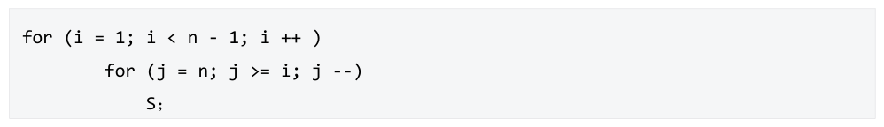
A． n(n-1) B． (n+3)(n-2)/2 C． (n+2)(n-1)/2 D． n(n-1)/2 答案与解析 答案：B
外层循环：i从1到n-2（包含），所以执行次数为n−2 次（近似为O(n)）。内层循环：对每个i，j从n递减到i，即执行n - i + 1 次。 𝑛−2𝑛我们要求的是语句S被执行的总次数：𝑇𝑛= 𝑛+ 1 −𝑖= 𝑖=1𝑘=32选B。
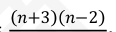
教材第 3 页 第 13 题
以下程序的时间复杂度是（ ）
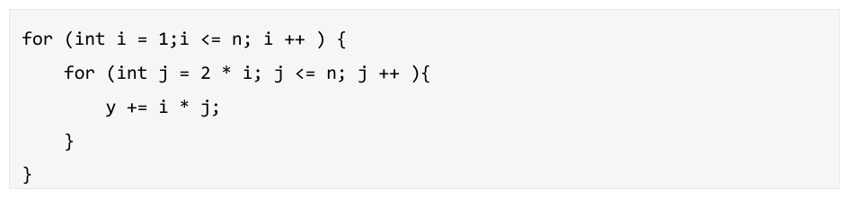
A． 𝑂𝑛 B． 𝑂𝑛2 C． 𝑂𝑛𝑙𝑜𝑔2𝑛 D． 𝑂𝑙𝑜𝑔2𝑛 答案与解析 答案：B
外层循环：i从1到n，共执行n次；内层循环：对每个i，j从2i到n，共执行n−2i+1次（当2i≤n 时）我们要计算语句y += i * j总共执行了多少次： ⌊𝑛/2⌋ 𝑛−2𝑖+ 1，令𝑚= ⌊𝑛/2⌋，有𝑇𝑛= 𝑖=1𝑚𝑖=122
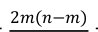
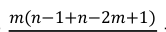
教材第 4 页 第 14 题
下列代码的时间复杂度是（ ）
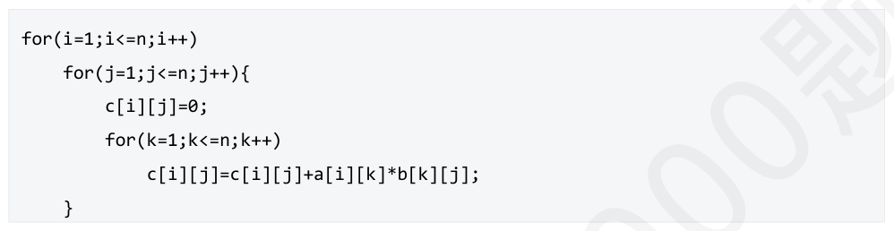
A． 𝑂𝑛 B． 𝑂𝑛2 C． 𝑂𝑛2 𝑙𝑜𝑔2 𝑛 D． 𝑂𝑛3 答案与解析 答案：D
该算法为矩阵乘法，所有语句频度之和，是矩阵阶数n 的函数，用f(n)表示之。换句话说，上例算法的执行时间与f(n)成正比：𝑓𝑛= 2𝑛3 + 3𝑛2 + 2𝑛+ 1，即时间复杂度是𝑂𝑛3 。
教材第 4 页 第 15 题
下列代码的时间复杂度为（ ）
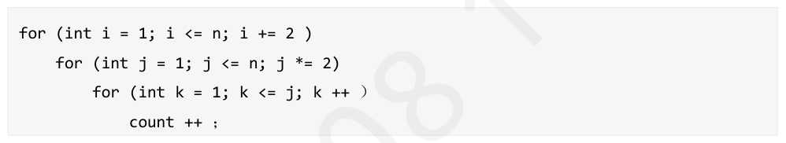
A． 𝑂𝑛2 𝑙𝑜𝑔2 𝑛 B． 𝑂𝑛2 C． 𝑂𝑛𝑙𝑜𝑔2𝑛 D． 𝑂𝑛3 答案与解析 答案：B
(2𝑞 <=𝑛) (2𝑝+1<=𝑛)𝑗1 𝑗=1,2,4,⋯,2𝑞 𝑘=1𝑖={1,3,5，⋯,2𝑝+1} (2𝑞 <=𝑛) (2𝑝+1<=𝑛) 𝑗 = 𝑗=1,2,4,⋯,2𝑞 𝑖={1,3,5，⋯,2𝑝+1} (2𝑝+1<=𝑛) 1 + 2 + 4 + ⋯+ 2𝑞 ) =( 𝑖={1,3,5，⋯,2𝑝+1} (2𝑝+1<=𝑛) −1(2𝑞 = 𝑛) 2𝑞+1 = 𝑖={1,3,5，⋯,2𝑝+1} (2𝑝+1<=𝑛) =(2𝑛−1) 𝑖={1,3,5，⋯,2𝑝+1} =𝑝≈𝑛/2 (2𝑛−1)(𝑛/2) = 𝑂(𝑛2 ) 𝑛𝑛1
教材第 4 页 第 16 题
以下代码的时间复杂度为（ ） 3
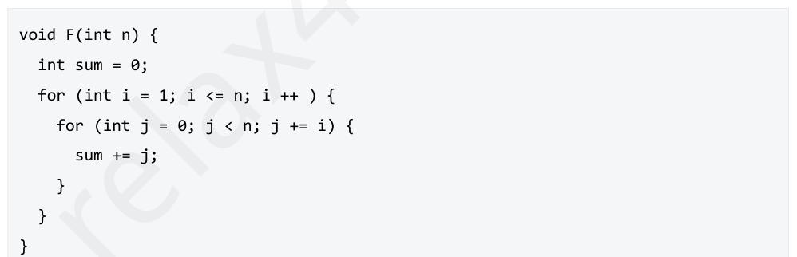
A． 𝑂𝑛2 B． 𝑂𝑛 C． 𝑂𝑛𝑙𝑜𝑔2𝑛2 D． 𝑂𝑛3 答案与解析 答案：C
考虑到内部循环每次执行𝑘 ，即 O(nlogn) 𝑖 次操作。总的执行次数就是 ∑ 𝑘 = 𝑛∑ 𝑛1𝑘 近似 O(nlogn) 证明如下： 调和级数𝐻𝑛= 𝑘=1𝑛+1𝑛𝑛111𝑛+1证明下界： 𝑥 𝑑𝑥+ 1 = ln 𝑛+ 1 −ln 2 + 1 = ln 𝑘 + 1 ≥ ∫+ 1 = 2𝑘=1𝑘=2𝑘2ln𝑛+ 1⇒𝐻𝑛∈𝛺𝑙𝑜𝑔𝑛𝑛𝑛11证明上界： 𝑥 𝑑𝑥= 1 + ln𝑛⇒𝐻 𝑛 ∈𝑂log𝑛 𝑘 ≤1 + ∫ 1𝑘=1综合以上，ln𝑛+ 1≤𝐻𝑛≤1 + ln𝑛⇒𝐻𝑛∈𝛩log𝑛
教材第 4 页 第 17 题
下面程序的时间复杂度是（ ）
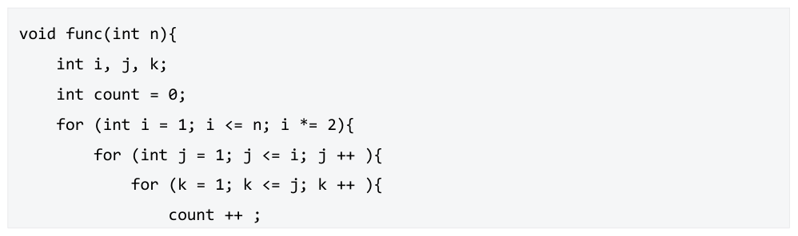
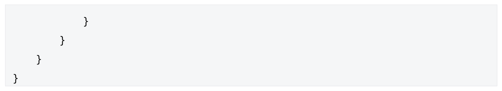
A． 𝑂𝑛3 B． 𝑂𝑛2 C． 𝑂𝑛𝑙𝑜𝑔2𝑛 D． 𝑂𝑛2 𝑙𝑜𝑔2 𝑛 答案与解析 答案：B
1111 𝑗=1𝑘=1𝑖={1,2,4，⋯,2𝑞 } 𝑖 =𝑗 𝑖={1,2,4,⋯，2𝑞 }𝑗=1 𝑖(𝑖+ 1) = 2𝑖={1,2,4,⋯,2𝑞 } = 1 𝑖2 + 𝑖2𝑖={1,2,4,⋯,2𝑞 } = 1 2 (1 + 4 + 4 2 + ⋯+ 4 𝑞 ) + 1 2 (1 + 2 + ⋯+ 2 𝑞 ) 2 ( 1 −4 𝑞+1 1 −2𝑞+1 = 1 ) + 1 1 −421 −2 = 4 𝑞+1 −1 + 2 𝑞+1 −1 →2 𝑞 ∼𝑛 𝑂(𝑛2 ) 62
教材第 4 页 第 18 题
对于下列求Fibonacci 数的算法，其时间复杂度为（ ）
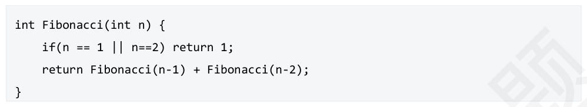
A． O(n) B． O(n²) C． 𝑂 D． 指数复杂度𝑛 答案与解析 答案：D
根据递推关系得T(n)=T(n-1)+T(n-2)+O(1)，可以用递归树展开的方式，树高为O （n），时间复杂度是递归树的结点个数，显然这是一个指数级时间复杂度。
教材第 5 页 第 19 题
以下是经典汉诺塔问题的伪代码，在调用hanoi(n, 'A', 'C', 'B');时，时间复杂度是（ ）。
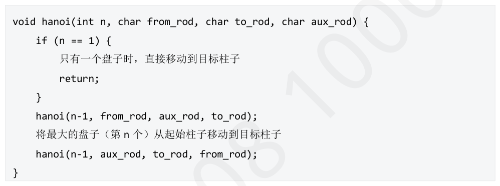
A． 𝑂2𝑛 B． 𝑂𝑛 C． 𝑂𝑛2 D． 𝑂𝑛𝑙𝑜𝑔𝑛 答案与解析 答案：A
此题也可考察盘子移动次数，难度会更高。设n 个盘子的汉诺塔问题移动次数为S(n)，推导如下：2 𝑆𝑛−2+ 1= . . . =2𝑛−1 𝑆1+𝑛 →𝑆𝑛= 2𝑛 −1综上，盘子的移动次数为2𝑛 −1，即时间复杂度为𝑂2𝑛 ，答案选A。
教材第 5 页 第 20 题
设二叉树共有n 个结点，下列程序段的时间复杂度是（ ）。
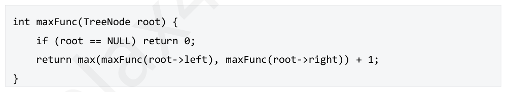
A． 𝑂𝑙𝑜𝑔2𝑛 B． 𝑂𝑛 C． 𝑂𝑛𝑙𝑜𝑔2𝑛 D． 𝑂2𝑛 答案与解析 答案：B
此题目的算法的意思是计算出二叉树的最大深度，通过简单地遍历一遍二叉树内的所有结点即可求出结果。此算法的时间复杂度是O(n)。
教材第 5 页 第 21 题
下列代码的时间复杂度是（ ）
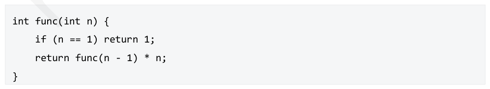
A． 𝑂𝑛2 B． 𝑂𝑛 C． 𝑂2𝑛 D． 𝑂𝑛𝑙𝑜𝑔2𝑛 答案与解析 答案：B
递归关系式为T(n)=T(n−1)+O(1)，为什么这里是O（1）不是O（n），因为* n是单个乘法操作，时间消耗为常数。展开递归：T(n)=T(n−1)+O(1)=(T(n−2)+O(1))+O(1)=(T(n−3)+O(1))+ O(1)+O(1)=...=T(1)+O(n)。因为T(1) = O(1)，最终得：T(n)=O(n)
教材第 5 页 第 22 题
下列递归表达式的复杂度是多少（ ） 𝑇𝑛= 3𝑇𝑛4+ 𝛩𝑛2
A． O（𝑛2 ） B． O（2𝑛 ） C． O (𝑛) D． O（𝑛2 𝑙𝑜𝑔2 𝑛） 答案与解析 答案：A
【方法一】递归树法。展开第一层，我们画出根节点下面的三个子节点。其中，𝑐𝑛2 表示根节点这一层分解和合并的代价，也就是递归式中𝛩𝑛2 表示的部分。这样就得到了一棵完整的递归树。每层数据规模缩小为之前的四分之一，直到叶子结点数据规模为1，因此总层数为。上图最右侧计算了每层所有结点的总代价，计算方式很简单，就是单个结点的代价乘以该层的结点数量。其中，最后一层单个结点的代价为常数，结点数量为3𝑙𝑜𝑔 4 𝑛 = 𝑛𝑙𝑜𝑔 43 ，总代价我们记做。接下来，我们只需要把所有结点的代价加起来，就可以得到递归式的解。 2𝑙𝑜𝑔4𝑛−1 = 𝑐𝑛2 +3 3316 𝑐𝑛 2 + 𝑐𝑛2 + ⋯+𝑐𝑛2 + 𝛩𝑛𝑙𝑜𝑔 4 3 𝑇𝑛1616𝑖𝑙𝑜𝑔4𝑛−13𝑐𝑛2 + 𝛩𝑛𝑙𝑜𝑔 4 3 = 16𝑖=0𝑖 ∞ 3𝑐𝑛2 + 𝛩𝑛𝑙𝑜𝑔 4 3 < 16𝑖=011 −3/16 𝑐𝑛 2 + 𝛩𝑛 𝑙𝑜𝑔 4 3 = = 16 13 𝑐𝑛 2 + 𝛩𝑛 𝑙𝑜𝑔 4 3 = 𝑂𝑛2 【方法二】主定理（直接记结论）递归表达式形如：𝑇𝑛= 𝑎𝑇𝑛𝑏+ 𝑓𝑛𝑛𝑙𝑜𝑔 𝑏 𝑎 > 𝑓𝑛，则𝑇𝑛= 𝛩𝑛𝑙𝑜𝑔 𝑏 𝑎 + 𝑂𝑛𝑙𝑜𝑔 𝑏 𝑎 = 𝛩𝑛𝑙𝑜𝑔 𝑏 𝑎 • 𝑛𝑙𝑜𝑔 𝑏 𝑎 < 𝑓𝑛，且对于某个常数c<1和所有足够大的n有𝑎𝑓𝑛𝑏≤𝑐𝑓𝑛，则可以推导出 • . 𝑇𝑛= 𝛩𝑓𝑛𝑛𝑙𝑜𝑔 𝑏 𝑎 = 𝑓𝑛，则𝑇𝑛= 𝛩𝑛𝑙𝑜𝑔 𝑏 𝑎 + 𝛩𝑛𝑙𝑜𝑔 𝑏 𝑎 𝑙𝑜𝑔2 𝑛= 𝛩𝑛𝑙𝑜𝑔 𝑏 𝑎 𝑙𝑜𝑔2 𝑛 • 例题①：𝑇𝑛= 9𝑇𝑛3+ 𝑛对于这个递归式，我们有𝑎= 9、𝑏= 3、𝑓𝑛= 𝑛，此时𝑛𝑙𝑜𝑔 𝑏 𝑎 = 𝑛𝑙𝑜𝑔 39 = 𝑛2 。由于𝑓𝑛= 𝑛渐进小于𝛩𝑛2 ，所以可以应用于主定理的第一种情况，从而得到解𝑇𝑛= 𝛩𝑛2 . 例题②：𝑇𝑛= 𝑇2𝑛/3+ 1对于该式，有𝑎= 1、𝑏= 3/2、𝑓𝑛= 1，此时𝑛𝑙𝑜𝑔 𝑏 𝑎 = 𝑛𝑙𝑜𝑔 3 2 1 = 𝑛0 = 1，恰好与𝑓𝑛相等，所以可以应用于主定理的第二种情况，从而得到解𝑇𝑛= 𝛩𝑙𝑜𝑔2𝑛。例题③：𝑇𝑛= 3𝑇𝑛4+ 𝑛𝑙𝑜𝑔2 𝑛对于该式，有𝑎= 3、𝑏= 4、𝑓𝑛= 𝑛𝑙𝑔𝑛，此时𝑛𝑙𝑜𝑔 𝑏 𝑎 = 𝑛𝑙𝑜𝑔 43 = 𝑛0.793 。显然𝑓𝑛= 𝑛𝑙𝑔𝑛渐进大于𝑛0.793 ，应考虑主定理的第三种情况。但需要检查是否满足附加条件：对于某个常数c<1 和所有足够大的n 有𝑎𝑓𝑛𝑏≤𝑐𝑓𝑛。带入𝑎、𝑏和𝑓𝑛，得3 𝑛 4 lg 𝑛 4 ≤𝑐𝑛𝑙𝑔𝑛3 4 (𝑙𝑔𝑛−2) ≤𝑐𝑙𝑔𝑛3 4 −𝑐𝑙𝑔𝑛≤3 234 时，该式恒成立，附加条件满足，可以应用主定理的第三种情况，从而得到解 𝑐≥ 𝑇𝑛= 𝛩𝑛𝑙𝑔𝑛例题④：𝑇𝑛= 2𝑇𝑛2+ 𝑛𝑙𝑔𝑛对于该式，有𝑎= 2、𝑏= 2、𝑓𝑛= 𝑛𝑙𝑔𝑛，此时𝑛𝑙𝑜𝑔 𝑏 𝑎 = 𝑛𝑙𝑜𝑔 22 = 𝑛。显然，𝑓𝑛= 𝑛𝑙𝑔𝑛渐进大于n，应考虑主定理的第三种情况。将其带入附加条件，得2 𝑛 2 lg 𝑛 ≤𝑐𝑛𝑙𝑔𝑛2𝑙𝑔𝑛−1≤𝑐𝑙𝑔𝑛1 −𝑐𝑙𝑔𝑛≤1 • 当𝑐≥1时，该式恒成立。但附加条件要求c<1，因此该式不能使用主方法的第三种情况。也就是说，并非所有形如𝑇𝑛= 𝑎𝑇𝑛𝑏+ 𝑓𝑛的递归式都可以应用主方法求解，情况二和情况三之间是存在空隙的。这种情况我们就只能采用递归树的方法求解了，同学们可以试一下，求出来的结果为𝑇𝑛= 𝛩𝑛𝑙𝑔2 𝑛.
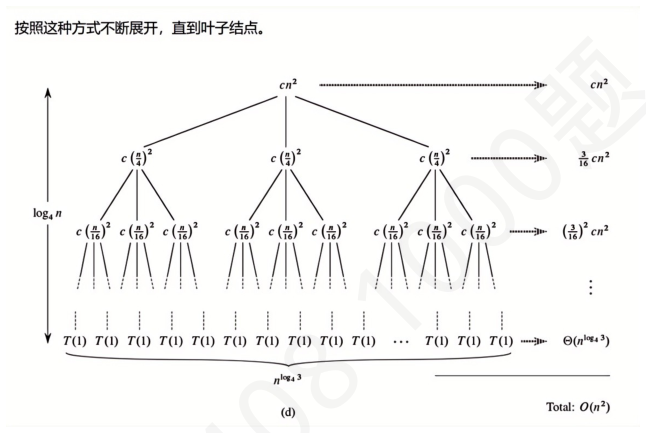
教材第 5 页 第 23 题
下列递归代码的时间复杂度为（ ）
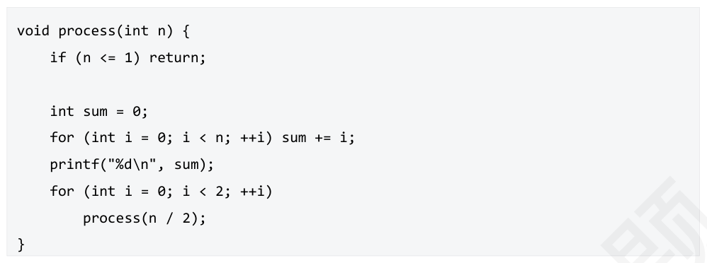
A． 𝑂𝑛𝑙𝑜𝑔2𝑛 B． 𝑂𝑛2 C． 𝑂𝑛2 𝑙𝑜𝑔2 𝑛 D． 𝑂𝑙𝑜𝑔2𝑛 答案与解析 答案：A
【方法一】代入法𝑇𝑛= 2𝑇𝑛2+ 𝑂𝑛= 2（2𝑇𝑛4+ 𝑂𝑛2）+ 𝑂𝑛= 4𝑇𝑛4+ 𝑂𝑛+ 𝑂𝑛 = 4𝑇𝑛4+ 2𝑂𝑛= 42𝑇𝑛8+ 𝑇𝑛4+ 2𝑂𝑛= 8𝑇𝑛8+ 3𝑂𝑛 = 2𝑙𝑜𝑔 2 𝑛 𝑇1+ 𝑙𝑜𝑔2 𝑛𝑂𝑛= 𝑂𝑛𝑙𝑜𝑔2 𝑛适合代入法的例子：12 年真题阶乘𝑂(1)𝑛≤1𝑇(𝑛) = 𝑂(1) + 𝑇(𝑛−1)𝑛> 1𝑇𝑛= 𝑂1+ 𝑇𝑛−1= 𝑂1+ 𝑂1+ 𝑇𝑛−1= 2𝑂1+ 𝑇𝑛−2= . . . =𝑛−1𝑂1+ 𝑇1=𝑛−1𝑂1+ 𝑂1= 𝑛𝑂1= 𝑂𝑛 【方法二】递归树法。根据递归式，其中2𝑇（𝑛/2）是每次递归都会产生2 个子递归，规模变为原来的1/2，且每次参数为n 的递归中，for 循环累计求和的开销是𝛩𝑛。那么我们可以画出一棵递归树，其中结点权值为对应递归代码中的时间开销。递归树的高度为𝑙𝑜𝑔2𝑛，每层的工作量如下： •第0层（根层）：执行𝑂𝑛 • 第1层：执行2 × 𝑂𝑛2= 𝑂𝑛第2层：执行4 × 𝑂𝑛4= 𝑂𝑛 • •第3层：执行8 × 𝑂𝑛8= 𝑂𝑛 •... 每一层的工作量都是𝑂𝑛，递归树有log2 𝑛层。 【方法三】主定理（记结论）递归表达式形如：𝑇𝑛= 𝑎𝑇𝑛𝑏+ 𝑓𝑛𝑛𝑙𝑜𝑔 𝑏 𝑎 > 𝑓𝑛，则𝑇𝑛= 𝛩𝑛𝑙𝑜𝑔 𝑏 𝑎 + 𝑂𝑛𝑙𝑜𝑔 𝑏 𝑎 = 𝛩𝑛𝑙𝑜𝑔 𝑏 𝑎 • 𝑛𝑙𝑜𝑔 𝑏 𝑎 < 𝑓𝑛，且对于某个常数c<1和所有足够大的n有𝑎𝑓𝑛𝑏≤𝑐𝑓𝑛，则可以推导出 • 𝑇𝑛= 𝛩𝑓𝑛𝑛𝑙𝑜𝑔 𝑏 𝑎 = 𝑓𝑛，则𝑇𝑛= 𝛩𝑛𝑙𝑜𝑔 𝑏 𝑎 + 𝛩𝑛𝑙𝑜𝑔 𝑏 𝑎 𝑙𝑜𝑔2 𝑛= 𝛩𝑛𝑙𝑜𝑔 𝑏 𝑎 𝑙𝑜𝑔2 𝑛 • 回到这题： 𝑇𝑛= 2𝑇𝑛2+ 𝛩𝑛𝑎= 2, 𝑏= 2, 𝑓𝑛= 𝑂𝑛, 𝑛𝑙𝑜𝑔 𝑏 𝑎 = 𝑛 = 𝑓𝑛, 满足第三种情况，答案为𝑂𝑛𝑙𝑜𝑔2 𝑛
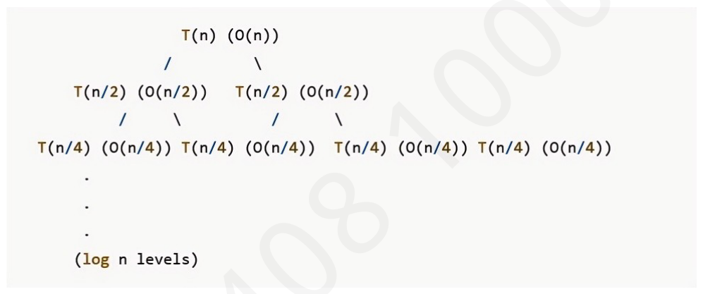
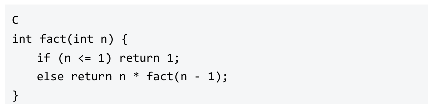
教材第 6 页 第 24 题
以下代码在最坏情况下的时间复杂度为（ ）
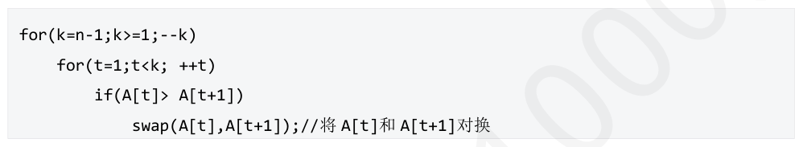
A． O(𝑛) B． O(𝑛𝑙𝑜𝑔2𝑛) C． O(𝑛3 ) D． O(𝑛2 ) 答案与解析 答案：D
观察程序发现，语句“A[j]与A[j+1]对换;”执行频率较高，且该语句并不影响双重for 循环判断语句，但会影响if 的判断语句。当A 数组的所有元素都逆序时，语句“A[j]与A[j+1] 对换;”会一直执行，此时为最坏情况。该语句在最坏情况下的频度是O(n)，选D。
教材第 6 页 第 25 题
下列程序段的空间复杂度是（ ）。
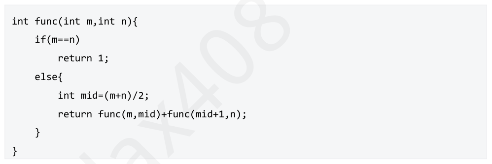
A． 𝑂𝑙𝑜𝑔2𝑛 B． 𝑂𝑛 C． 𝑂𝑛𝑙𝑜𝑔2𝑛 D． 𝑂2𝑛 答案与解析 答案：A
可以写出算法的递归表达式是S(n) = 2×S(n/2) + 1；可以画出该递归式对应的递归树，如下图所示：在最坏情况下，递归会一直分解到m等于n，每次递归将区间一分为二，因此递归深度为O(logn)，选择A。
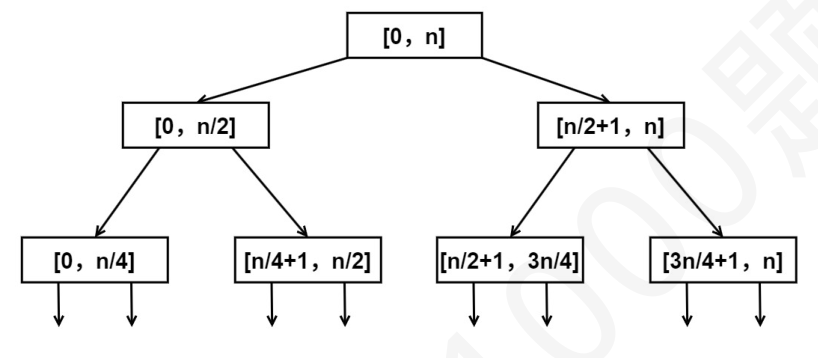
教材第 6 页 第 26 题
若某算法的空间复杂度为O(1)，则表示该算法（ ）。
A． 不需要任何辅助空间 B． 所需辅助空间大小与问题规模n 无关 C． 不需要任何空间 D． 所需空间大小与问题规模n 无关 答案与解析 答案：B
算法的空间复杂度为O(1)，表示执行该算法所需的辅助空间大小相比输入数据的规模来说是一个常量，而不表示该算法执行时不需要任何空间或辅助空间。 【答案速对】 ABCBCACCDAD（CD）BACDACDBADBDBDCABBD
教材第 6 页